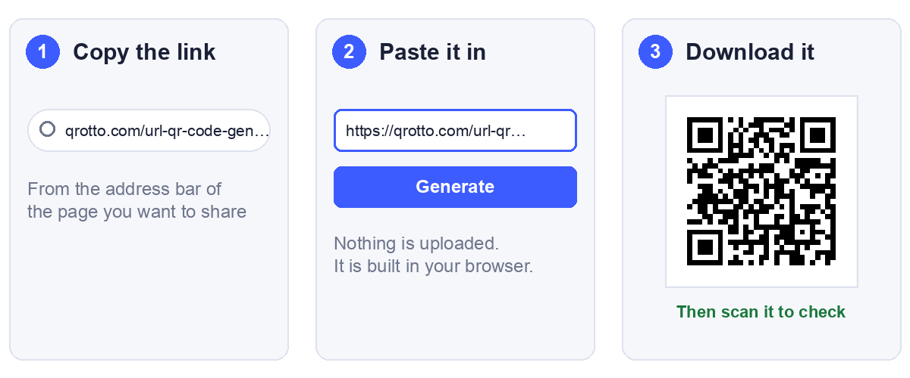

You have a link and you want a QR code that opens it. That is a two minute job, and most guides stop there. This one covers the two minutes first and then the handful of cases where the code looks perfect and still sends people somewhere wrong, or nowhere.
One note on words. A link and a URL are the same thing: the address of a web page. When people search for how to convert a link into a URL QR code, they mean this.
The quick way, in three steps

- Copy the link. Open the page you want to share and copy the address from the browser bar. Copying from the bar, rather than from a message someone sent you, gives you the address the page actually settles on.
- Paste it into a generator. Our URL QR code generator draws the code the moment you press Generate. It runs in your browser, so the link is not uploaded anywhere.
- Download it. PNG for screens, SVG if anything is going to a printer.
- Scan it and follow the link. This is the step people skip, and the rest of this article is mostly about why it matters.
What actually happens to your link
Almost nothing, and that is the important part. A QR code for a link holds the link as plain text and nothing else. There is no conversion into a special format, no registration, and no account behind it.
We checked how our own generator treats what you type, because it is worth knowing before you rely on it. We typed a range of inputs into the live page and decoded each code back. Six of them are below:
| You type | The code holds |
|---|---|
https://example.com/summer-sale | Exactly that |
| The same, with spaces before and after | Exactly that, spaces trimmed |
example.com/summer-sale | Exactly that, no https:// added |
https://example.com/my page | Exactly that, space kept |
https://example.com/café | Exactly that, accent kept |
HTTPS://EXAMPLE.COM/SUMMER-SALE | Exactly that, capitals kept |
So the code is only as good as the link you give it. The generator does not repair anything, which is why the next section matters.
Four things to check before you paste
1. Spaces and accented letters in the link
A web address is not allowed to contain a space. The standard says it must be written as %20, and an accented letter such as é becomes %C3%A9. A link with a raw space in it can fail in ways that depend entirely on the app that reads it. Some will cut the link at the space, and some will refuse to open it. We have not tested every phone, so we will not claim which ones, only that the safe form is the encoded one.
You rarely meet this by accident, because browsers usually encode links for you when you copy them. It shows up when someone types a link by hand or builds one from a spreadsheet cell. The measurements below show what encoding costs.
2. A missing https://
As the table showed, the generator will happily encode example.com/summer-sale with no prefix. Whether a scanner then treats it as a link or as a line of text is up to the scanner. Keep the https:// and the question never arises. We measured the size effect of this in URL to QR code: which form of your link to encode, so we will not repeat it here.
3. A link that only works for you
The commonest failure of all, and no generator can catch it. If the page needs you to be signed in, or it is a private document, or it points at an address on your own network, then everyone except you lands on a login screen or an error. You cannot see the problem, because you are the one person it works for.
The fix is the test further down: open the link in a private browsing window where you are not signed in.
4. A link wrapped in tracking or a redirect
Links copied from emails, social posts and search results are often wrapped in extra text that records the click before sending you on. The wrapper makes the code denser, and it adds a second web address that has to keep working for as long as your code is on the wall. If you can reach the page directly, use the direct address.
What we measured: spaces, accents and tracking junk
We encoded each of these at error correction level M, recorded the grid, and decoded every code back to confirm it held what we put in. Print size is the smallest usable width, from the 0.4 mm per module floor plus the quiet zone.
| Link | Chars | Grid | Smallest usable print |
|---|---|---|---|
https://example.com/my page, raw | 27 | 29 x 29 | 14.8 mm |
Same link, space written as %20 | 29 | 29 x 29 | 14.8 mm |
https://example.com/café, raw | 24 | 25 x 25 | 13.2 mm |
Same link, é written as %C3%A9 | 29 | 29 x 29 | 14.8 mm |
https://example.com/menú de verano, raw | 34 | 29 x 29 | 14.8 mm |
| Same link, fully encoded | 43 | 33 x 33 | 16.4 mm |
| A clean page link | 27 | 29 x 29 | 14.8 mm |
| The same page with four tracking parameters | 111 | 45 x 45 | 21.2 mm |
Every one of these decoded correctly. That is worth stating plainly: the raw links with spaces scan fine as codes. The code is not the weak point. What differs is whether the app that reads it will treat the text as a valid link.
Two results are worth keeping. Writing a link correctly costs almost nothing: the encoded space left the code at the same size, and the encoded accent cost 1.6 mm, one size step. And tracking text is the expensive thing, taking the same page from 14.8 mm to 21.2 mm, which is 6.4 mm for text no one reads.
Encode the link properly and strip the junk. Correct encoding is nearly free. Tracking parameters are not. If you do need to measure scans, give the campaign its own short path on your own site instead of carrying the parameters inside the code.
Test it like a stranger would
Three checks, about a minute in total, and they catch nearly everything above.
- Open the link in a private browsing window. You are signed out, so you see what a stranger sees. This catches the link that only works for you.
- Scan the finished code on a phone using mobile data, not your office or home WiFi. Nobody scanning your poster is on your network.
- Read the text back with a plain QR scanner. Our scanner shows the exact link inside the code, so you can spot a stray space or a wrapper before it reaches paper.
Then check that the page itself works on a phone. Every scan is a mobile visit, so a page that only behaves on a desktop wastes the code.
How big to print it
A normal page link of around 27 characters needs at least 14.8 mm to print reliably. That is a floor, not a recommendation. For a card someone holds, 25 mm is comfortable, and for a poster the code should grow with the viewing distance. If a longer link is pushing the code up a size, our sign size guide shows how many characters each print size can carry.
Use SVG for anything a printer touches. It has no pixels, so it stays sharp at any size. Our customiser exports it.
When a plain link is not enough
A QR code for a link is static. It is a printed pattern, and the link inside cannot be edited. If the page moves, every printed copy points at the old address.
If you may need to change the destination later, point the code at a short path on a domain you own, such as yoursite.com/menu, and redirect that to wherever the content lives. You can then move the destination whenever you like and the printed code keeps working. We cover this properly in static vs dynamic QR codes.
Be careful with free tools that offer to track your scans. Many do it by pointing the code at their own address, and if their free tier ends, your printed code stops working.
Common questions
Is a link the same as a URL?
Yes. Both mean the web address of a page. Converting a link into a QR code and creating a QR code for a URL are the same job.
Can I convert any link into a QR code?
Any link can be encoded, because the code just holds text. Whether it works for the person scanning depends on the page. A link that needs a login, or that points at a private network, will fail for everyone but you.
Does the QR code expire?
The code does not. It is a printed pattern with no account behind it. What can stop working is the page it points to, so the code is only as permanent as the destination.
Do I need to sign up?
Not for ours. There is no account, no watermark, and the link is not uploaded, because the code is drawn in your browser. You can test that by loading the page, switching off your internet connection, and making a code. It still works.
How long can the link be?
Far longer than any sensible address, but length shows up as printed size. A 27 character link needs 14.8 mm, and 111 characters needs 21.2 mm. Shorter links print smaller and scan more easily from a distance.
Why does my code open the wrong page?
Usually a redirect, or a link copied from somewhere that wrapped it. Open the address exactly as it is inside the code, in a private window, and see where it lands.
Should I shorten the link first?
Only with a short path on a domain you control. A third party shortener gives a small code, but the short address belongs to somebody else, and if that service closes or blocks the domain your printed code goes with it.